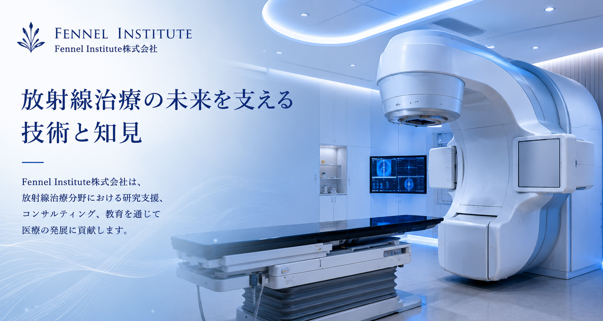
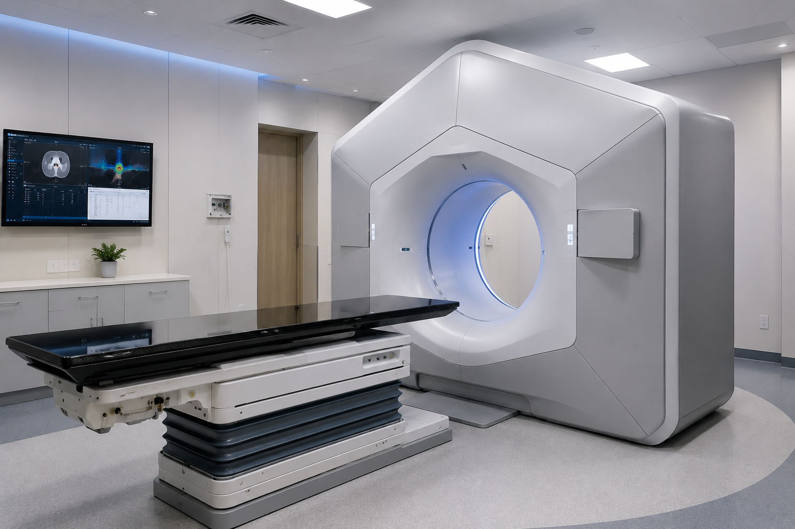

事業内容
医療とAIを融合し、医療現場へ新しい価値を提供します。

医療機器の開発、製造及び販売
放射線治療をはじめとする医療機器の企画・開発・販売を通じ、 医療現場の安全性・品質向上に貢献します。
- 放射線治療機器の開発・製造・販売
- 医療機器の設計・品質管理
- 医療機器の輸出入及び関連業務
医療ソフトウェア・医療情報システムの開発、販売及び保守
電子カルテや医療情報システムの設計・開発・保守を通じ、 医療DXを支援し、医療の質向上に貢献します。
- 電子カルテシステムの開発・販売・保守
- 医療情報システムの設計・構築
- 医療データ解析・可視化
- システム運用・保守・サポート
AI・医療データ解析
AIを活用した医療データ解析、画像解析、診療支援システムの研究・開発を行います。
教育・研修
医療従事者向け教育、放射線治療技術、医療DXなどの研修・講演を実施します。
コンサルティング
医療機関・企業に対し、放射線治療、医療機器、医療情報システム、AI導入に関するコンサルティングを提供します。